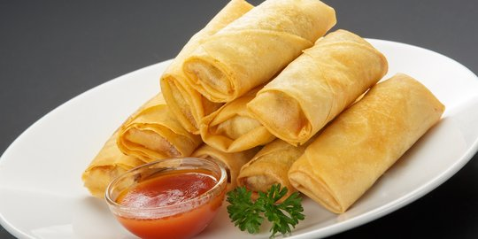

Lompia
Lumpia adalah variasi besar makanan pembuka yang digulung atau dim sum yang ditemukan dalam masakan Asia Timur, Asia Selatan, Timur Tengah, dan Asia Tenggara. Namanya adalah terjemahan literal dari chūn juǎn berbahasa Mandarin. (source :Wikipedia)